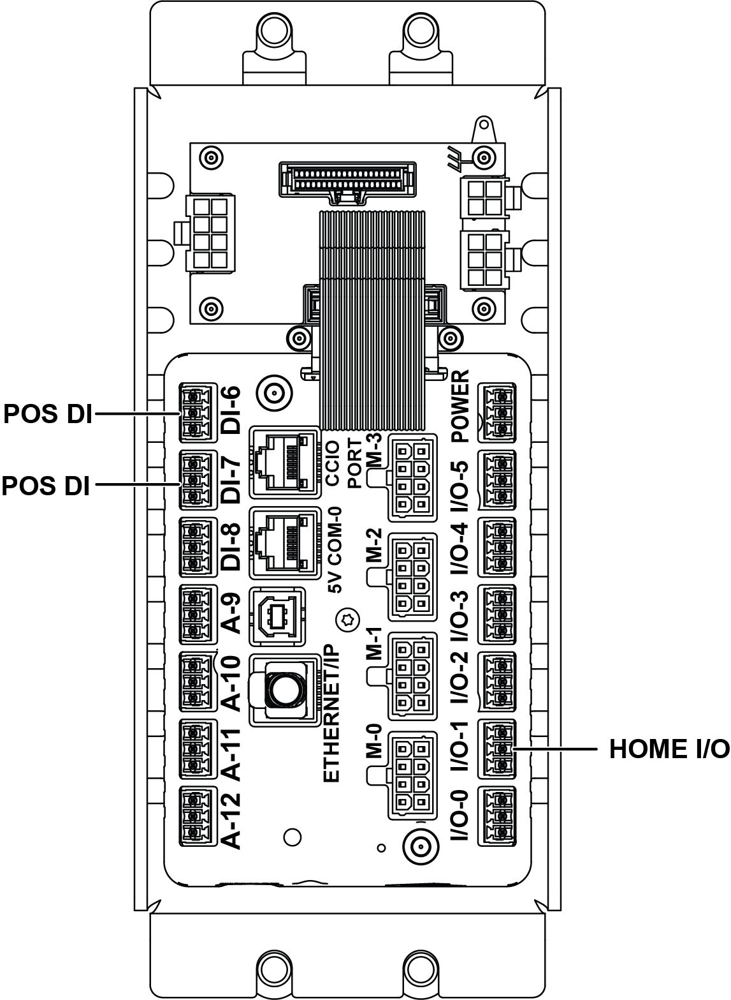

| Procedure ID | proc_install_clink_sensor_wiring_z_axis_a_axis_restart_operator_station_v1 |
|---|---|
| Title | Install CLINK Sensor Wiring for Z-Axis (I/O1/DI6/DI7) and A-Axis (PCA) and Restart Operator Station |
| Procedure Type | operation |
| Primary Role | operator |
| Support Safe | Yes |
| Capability Tags | tipper_station_fault |
| Access Surface | tipper_hmi, physical_floor |
| Audience Roles | operator |
| Failure Pattern Tags | None |
| Validation Status | needs_sme_review |
| Merge Status | source_finalized |
Install the CLINK sensor wiring by feeding the sensor through the rear wire routing hole and fastening it with an M3 button-head screw, routing Z-axis wires through the column and out the lower grommet into the control box (I/O1, DI6, or DI7), routing A-axis wires around the gearbox into the PCA, then restarting the operator station so the sensor connections are active.
Use when CLINK sensor wiring for the Z-axis and A-axis needs to be installed/reconnected so the sensor connections are active after wiring work.

Responsible role: operator
Instruction:
Feed the sensor through the wire routing hole on the rear side and fasten it in place using the M3 button-head screw.
Expected result:
The sensor is mechanically fastened at the rear wire routing hole using the M3 button-head screw.
Responsible role: operator
Instruction:
Route the Z-axis wires by dropping them down through the column and out the lower grommet into the control box, then plug into either I/O1, DI6, or DI7.
Expected result:
Z-axis wiring exits via the lower grommet into the control box and is connected to one of I/O1, DI6, or DI7.
Stop or Escalate If:
Responsible role: operator
Instruction:
Route the A-axis wires around the gearbox and plug them into the PCA.
Expected result:
A-axis wiring is routed around the gearbox and connected to the PCA.
Stop or Escalate If:
Responsible role: operator
Instruction:
Restart the operator station using the procedure referenced as "Starting The Operator Station" on page 66.
Expected result:
The operator station has been restarted.
Stop or Escalate If: